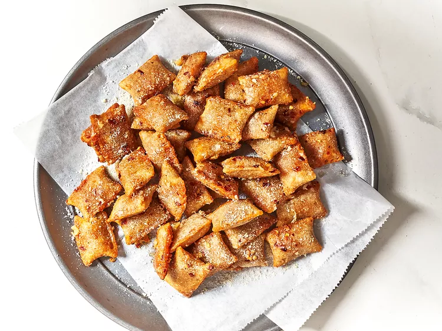

Home
Parmesan garlic pizza rolls

This Parmesan garlic pizza rolls recipe quickly adds a lot of flavor to convenient frozen pizza rolls.
Ingredients
- 1/2 (24.8-ounce) package pizza rolls, any flavor
- 3 tablespoons butter
- 1 clove garlic, finely minced, or more to taste
- 1/4 cup grated Parmesan cheese
Steps
- Gather all ingredients.
- Prepare pizza rolls in the air fryer according to package directions.
- Meanwhile, heat butter in a large skillet over medium heat. Add garlic and stir until fragrant, about 1 minute.
- Add pizza rolls to pan and toss to coat. Add Parmesan cheese and toss to coat. Serve warm.